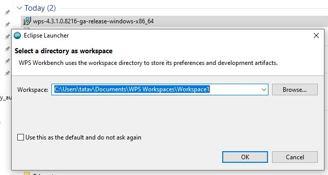

I am a statistical programmer who analyze clinical data using SAS software.Have been working
more than 12 years using SAS software , which is great tool to analyze the data and very easy
for Data manipulation . Recently I started exploring ways to analyze data available outside the
work environment, which is client specific. These are the things I ended up finding out
How Can I use SAS software for personnel research
There are couple of ways you can do
- Download student version of SAS software. For this we need to have Student email ID, which I do not have it
- Second option is when I reading through the SAS-L found something about World programming
Using WPS you can read and write SAS language programs exactly way you do it using SAS. I am using for my personnel purposes only as there was court litigation earlier in UK court and looks like WPS won the case . You can google more about it up
How to use WPS
Register to worldprogramming{target = "_blank"}

Once you download the .msi file run the .msi file and it will ask you the folder
 .
After you have done with installation . Download the License file
and browse the file using local server. Use the help document . Once
installation is complete , you can open an untitled program and it would look like this
Once you have the software is installed